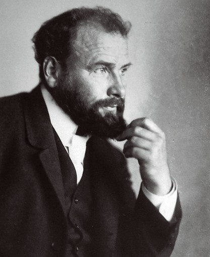

<--Back
Gustav Klimt

본명: 구스타프 클림트
출생: 1862년 7월 14일
사망: 1918년 2월 6일
19세기 말 ~ 20세기 초 오스트리아 빈(비엔나)에서 활동한 화가이자 아르누보의 대표적인 작가.
미술이 격동하던 19세기 말에 장식 회화가로 교육받았으나 곧 건축 장식회화에서 탈피하여 독자적인
영역을 구축하게 된다. 젊은 시절에는 사실적인 회화에도 능하였으나 점점 더 평면적이지만 장식적이고
구성적인 방향으로 나아갔으며, 화풍 뿐만 아니라 대학 회화라고 불리우는 일련의 문제작들에서 특유의
반항적/회의적 주제의식을 보여줘 큰 비난과 함께 명성을 얻은 바 있다. 하지만 20세기 들어서 모더니즘
계열의 미술이 빠르게 기존 회화 경향을 대체하였고, 클림트 이후의 작가들은 더이상 클림트와 같은 그림을
그리지 않게 된다. 자신만의 독창적 화풍으로 확고한 위상을 구축했지만, 그 이전 전통과도 다르면서 훗날
미술과도 다른, 고립된 섬과 같은 위치에 있는 작가.
 Gustav Klimt
Gustav Klimt